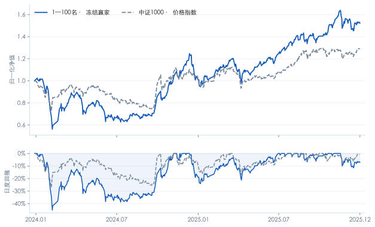

ST退出的实际障碍
知道风险，不等于当日能卖出
97 / 128全样本最小组风险退出成交中出现延迟
最长列示案例延迟166个交易日。三种ST规则在留出期的最大回撤均约45.16%，退出规则没有消除组合的大幅下跌。
夏普使用月收益、无风险率0。中证1000为价格指数。2024—2025曾在研究迭代中查看，属于历史留出评价，并非未窥视验证；以上为回测，非实盘业绩。
01 / 历史盈利能力
先看冻结赢家与基准，
再看收益是否持续、是否集中。

相对中证1000的平均月收益差为 0.864 个百分点，HAC(6) 95%区间为 [-1.452, 3.180]，包含0。当前样本不足以确认稳定的正超额收益。
区间衡量平均月收益差，不是年化收益差；亦不等于已经过风险调整的Alpha。| 年份 | 冻结赢家 | 中证1000 |
|---|---|---|
| 2015 | 158.16% | 76.10% |
| 2016 | 30.36% | -20.01% |
| 2017 | -25.75% | -17.35% |
| 2018 | -18.73% | -36.87% |
| 2019 | 30.54% | 25.67% |
| 2020 | 0.99% | 19.39% |
| 2021 | 36.59% | 20.52% |
| 2022 | 32.20% | -21.58% |
| 2023 | 33.21% | -6.28% |
| 2024 | 1.05% | 1.20% |
| 2025 | 50.74% | 27.49% |

02 / 现实执行条件
已评估交易约束的代价。
仍需验证容量、冲击与真实账户账本。
100万元的整手＋最低佣金情景，年化收益为22.00%，平均现金占比为5.04%。小资金更难接近100只股票的分散持仓，现金闲置会改变收益与回撤。
执行模拟 · 非最低入场资金建议| 期初资金 / 情景 | 年化收益 | 日度最大回撤 | 平均现金 | 平均持股数 |
|---|---|---|---|---|
| 10万元 | 17.17% | -22.35% | 45.58% | 66.6 |
| 30万元 | 21.35% | -38.02% | 14.79% | 99.8 |
| 100万元 | 22.00% | -43.34% | 5.04% | 100.2 |
| 200万元 | 22.22% | -44.59% | 2.92% | 100.2 |
| 连续份额对照 | 22.88% | -45.46% | 1.22% | 100.0 |
100股买入整手；单笔综合费用＝27.5bp成交额＋max(2.5bp成交额，5元)，是研究假设。平均持股数可能因待售旧仓与补仓重叠而略超100只；连续份额为无整手、无最低佣金的同起点对照。
ST退出的实际障碍
最长列示案例延迟166个交易日。三种ST规则在留出期的最大回撤均约45.16%，退出规则没有消除组合的大幅下跌。
次日开盘、停牌与限价约束、现金预算、风险退出与递延补仓、整手和最低佣金。
订单参与率、集合竞价容量、成交队列、动态冲击成本，以及真实股数和分红到账的账户账本。
冻结规则后逐日留痕的前向模拟或实盘业绩。当前不能据回测认定可复制执行。

03 / 方法与稳健性
五档均完整报告。
不根据历史留出期表现更换赢家。
沪深主板，含原中小板和后来退市股票。排除金融、CDR、上市不足252交易日及当时已知ST、退市整理和状态未知股票，再排名分组。每组目标100只、月度等权。
1—100至401—500名均参加。单边30bp下，1—100名以夏普0.880胜出，样本内年化22.99%。完全并列先低换手，再较大市值区间。
不换组、不重新选优。持仓出现已知风险后，在可成交时退出；卖款最早下一交易日按月初冻结候选顺延补仓。该时段已在迭代中查看，属于历史留出。
| 过滤后总市值名次 | 年化收益 | 夏普 | 日度最大回撤 |
|---|---|---|---|
| 1—100名 冻结赢家 | 23.42% | 0.784 | -45.16% |
| 101—200名 | 18.45% | 0.714 | -42.60% |
| 201—300名 | 18.52% | 0.750 | -40.61% |
| 301—400名 | 14.56% | 0.638 | -37.72% |
| 401—500名 | 22.26% | 0.906 | -36.57% |
| 中证1000价格指数 | 13.58% | 0.595 | -27.08% |
| 1—100名 冻结赢家 | 22.99% | 0.880 | -50.61% |
| 101—200名 | 15.73% | 0.683 | -51.18% |
| 201—300名 | 12.16% | 0.570 | -54.00% |
| 301—400名 | 5.47% | 0.332 | -57.97% |
| 401—500名 | 6.27% | 0.363 | -54.05% |
| 中证1000价格指数 | -0.26% | 0.134 | -72.35% |
留出期夏普最高的是401—500名。总体小市值梯度不等于“市值越小，在所有时期和所有指标下都越好”。窄屏可横向滚动表格。

已完成：10/30/50bp成本、三种ST规则、退市残值情景、同样本行业／流动性／动量／亏损控制、年度及收益集中度、市场环境分析、整手与最低佣金。完整定义和数值见报告及Notebook。
早期停牌市值含估计补全；财报历史版本未全部认证；退市残值属于情景假设。控制变量后的剩余收益、亏损或ST身份，均不能单独证明壳价值或因果关系。公开Notebook支持结果复算，完整历史回测仍需授权输入。
04 / 下一步研究
按历史成交额衡量参与率，加入成交上限、延迟与冲击情景，画出资金规模—完成率—净收益关系。
最直接补足实盘可行性的缺口。用未复权整数股数记录交易、公司行动、现金分红和实际费率，核对当前复权份额近似的误差。
从执行敏感性走向账户级验证。从新的冻结日期起，逐日保存候选、订单、未成交原因和模拟净值，按预先约定周期评价。
以上为后续计划，尚未完成这些验证。此外，可补全收益口径基准和组合层面的因子归因；现有横截面控制回归不能替代它们。当前无需继续堆叠排名分组。
05 / 报告与复现
先读报告把握研究逻辑，再用Notebook复算选优、绩效与HAC区间，最后检查执行引擎和数据契约。
无需API可复算公开结果；从原始行情重跑需要另行准备已授权数据，缺失输入会被检查拦截。